DB Browser скачать бесплатно
Интерфейс DB Browser
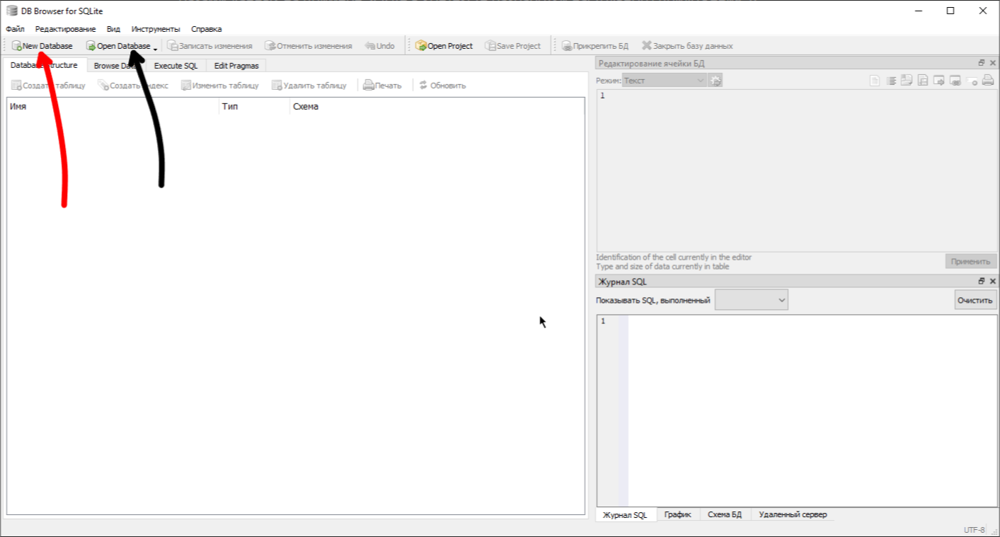
- New Database (Красная стрелочка): создает новый файл базы данных -
*.db. - Open Database (Черная стрелочка): открывает готовую базу данных из
.dbфайла.
Далее рассмотрим вкладки ниже:
Database Structure (Красная стрелочка):
Вкладка со структурой базы данных. Тут будет содержаться структура таблиц с данными.
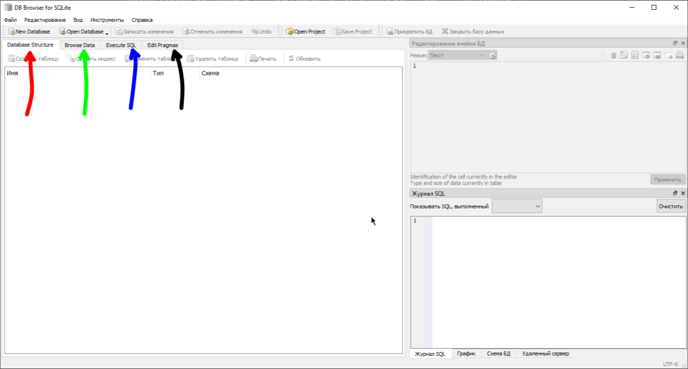
Browse Data (Зеленая стрелочка):
Вкладка, в которой можно посмотреть содержимое нужной таблицы.
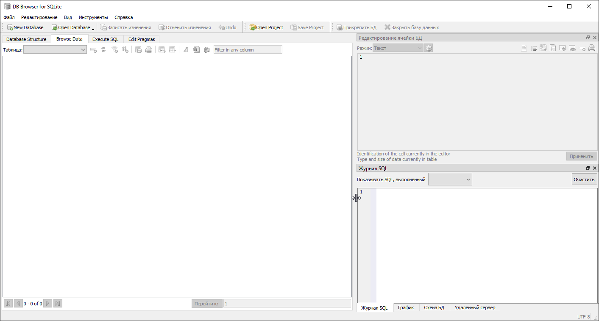
Execute SQL (Синяя стрелочка):
Вкладка для выполнения SQL запросов и вывода результатов запросов. Именно тут мы и будем создавать и заполнять таблицы.
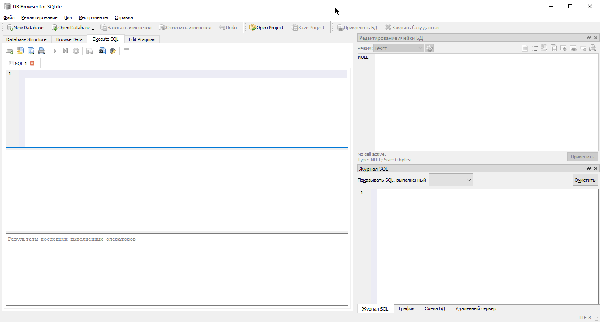
Edit Pragmas (Черная стрелочка):
Вкладка, которая позволяет настраивать параметры базы данных.
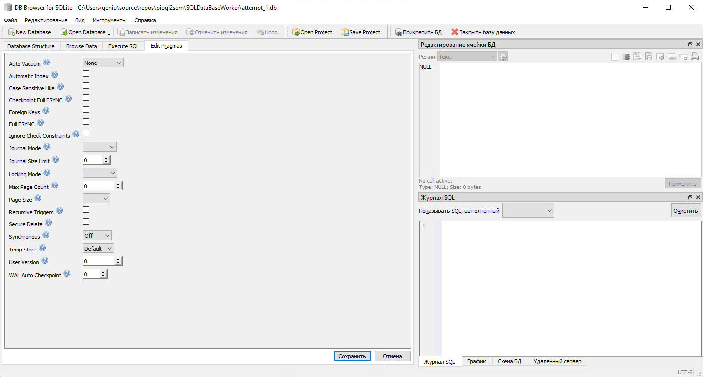
PRAGMA в контексте SQLite — это специальные команды, которые позволяют контролировать различные аспекты работы системы баз данных SQLite.
Создание базы данных
Для создания базы данных нужно нажать New Database.
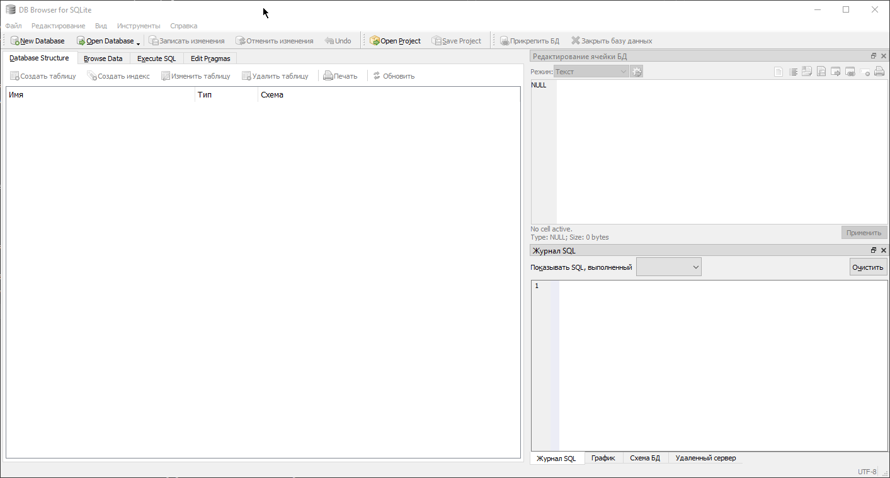
Программа предложит сразу создать таблицу. Рассмотрим окно создания таблиц:
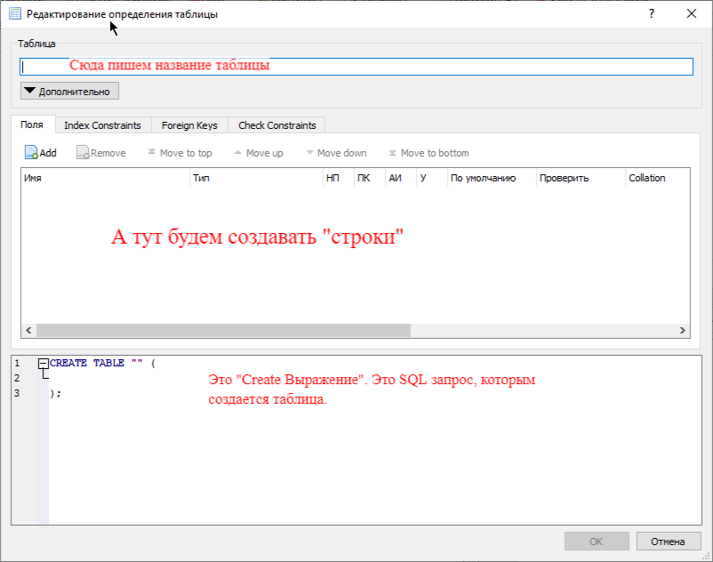
Нажмем на Add во вкладке Поля:
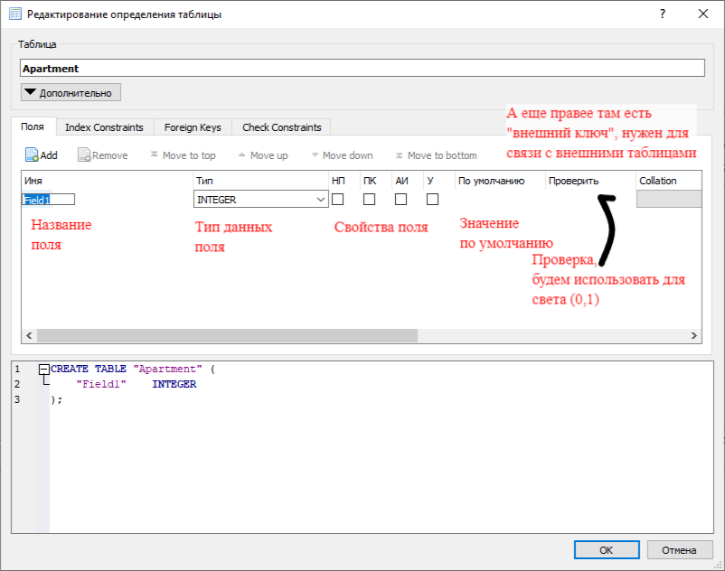
Перенести в отдельный файл
Типы данных полей.
Возможные типы данных:
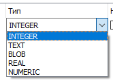
- NULL - В таблице не указан, но может быть. Указывает на отсутствие значения.
- INTEGER - Представляет целое число, которое может быть положительным и отрицательным. В зависимости от своего значения может занимать 1, 2, 3, 4, 6 или 8 байт.
- TEXT - Строка текста в одинарных кавычках, которая сохраняется в кодировке базы данных (UTF-8, UTF-16BE или UTF-16LE).
- BLOB - Бинарные данные, такие как изображения, аудиофайлы и видеофайлы.
- REAL. - Представляет число с плавающей точкой, занимает 8 байт в памяти.
- NUMERIC - этот идентификатор не представляет отдельного типа данных. А фактически представляет столбец, который может хранить данные всех пяти выше перечисленных типов.
Подробнее про типы данных в SQL.
Ограничения полей.
Рассмотрим ограничения полей:
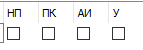
- НП - Не Пустое (Not Null) - если включить, то мы должны будем всегда заполнять это значение в строке.
- ПК - Первичный Ключ (Primary Key) - указывает, что данное поле будет первичным ключом, уникальным значением. Первичный ключ уникально идентифицирует строку в таблице.
- АИ - Авто Инкремент (Auto Increment) - указывает, что значение столбца будет автоматически увеличиваться при добавлении новой строки. Данное ограничение работает для столбцов, которые представляют тип INTEGER с ограничением ПК.
- У - Уникальное (Unique) - указывает, что столбец может хранить только уникальные значения.
NULL и NOT NULL
По умолчанию любой столбец, если он не представляет первичный ключ, может принимать значение NULL, то есть фактически отсутствие формального значения. Но если мы хотим запретить подобное поведение и установить, что столбец обязательно должен иметь какое-либо значение, то для него следует установить ограничение NOT NULL.
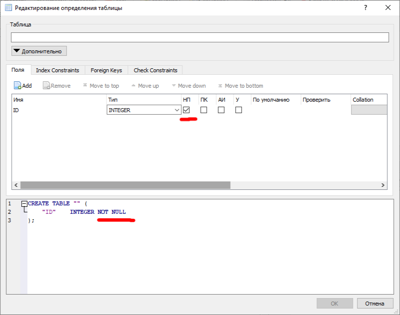
Default
Ограничение DEFAULT определяет значение по умолчанию для столбца. Если при добавлении данных для столбца не будет предусмотрено значение, то для него будет использоваться значение по умолчанию.
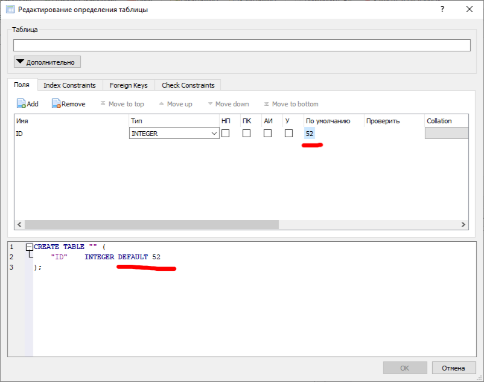
Check
Ограничение CHECK задает ограничение для диапазона значений, которые могут храниться в столбце. Для этого после CHECK указывается в скобках условие, которому должен соответствовать столбец или несколько столбцов.
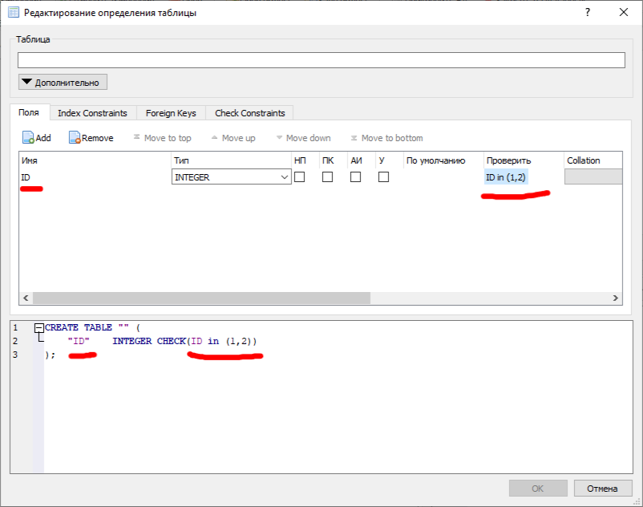
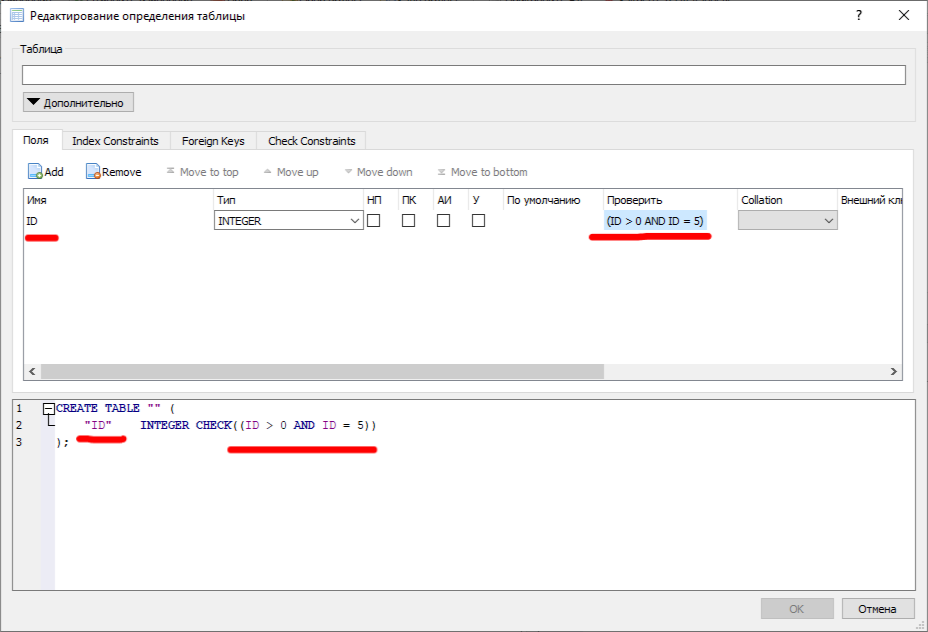